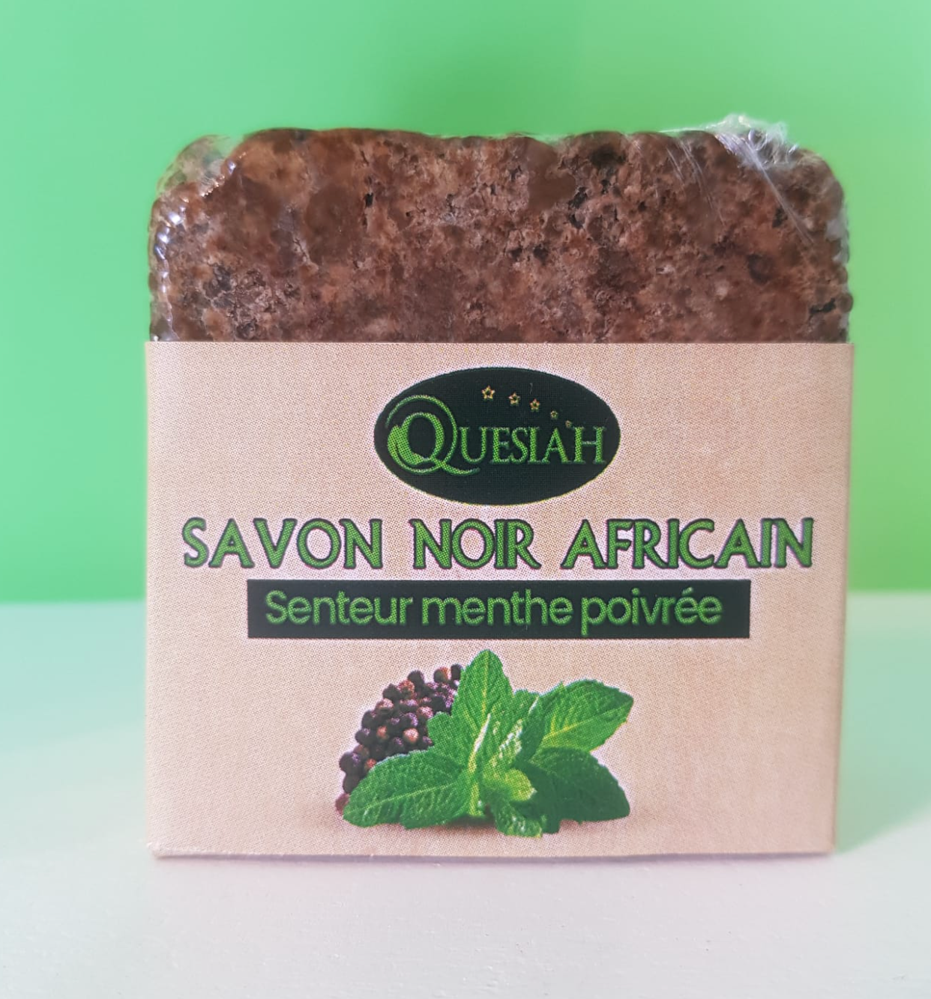
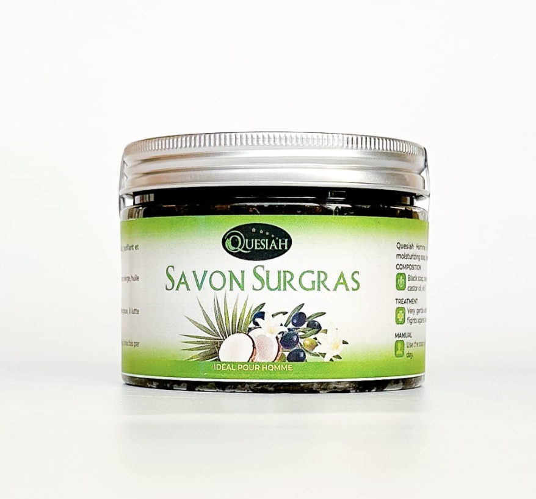
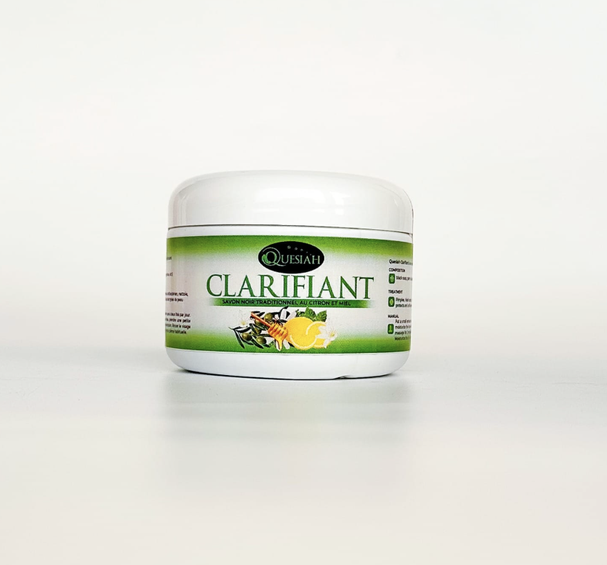

Lot de 3
Savon Koto à la menthe poivrée
Un savon Koto en pain, enrichi en beurre de karité et huile essentielle de menthe poivrée, pour une routine fraîche et simple.
15,00 €
DécouvrirQuesiah x Norkaya
Une sélection de savons fabriqués par notre partenaire Quesiah, présentés et distribués par Norkaya.

Un savon Koto en pain, enrichi en beurre de karité et huile essentielle de menthe poivrée, pour une routine fraîche et simple.
15,00 €
Découvrir
Un savon Koto généreux, formulé avec du beurre de karité, de l’huile de coco, de l’huile de ricin et du beurre de cacao.
12,00 €
Découvrir
Un savon Koto en pot associant savon africain, miel, curcuma, neem, citron et vitamine E.
10,00 €
DécouvrirAprès le nettoyage, appliquez le beurre de mangue Norkaya pour nourrir la peau et les cheveux.
Découvrir le beurre de mangueUne sélection claire, des informations produits vérifiées et un parcours de commande sécurisé.